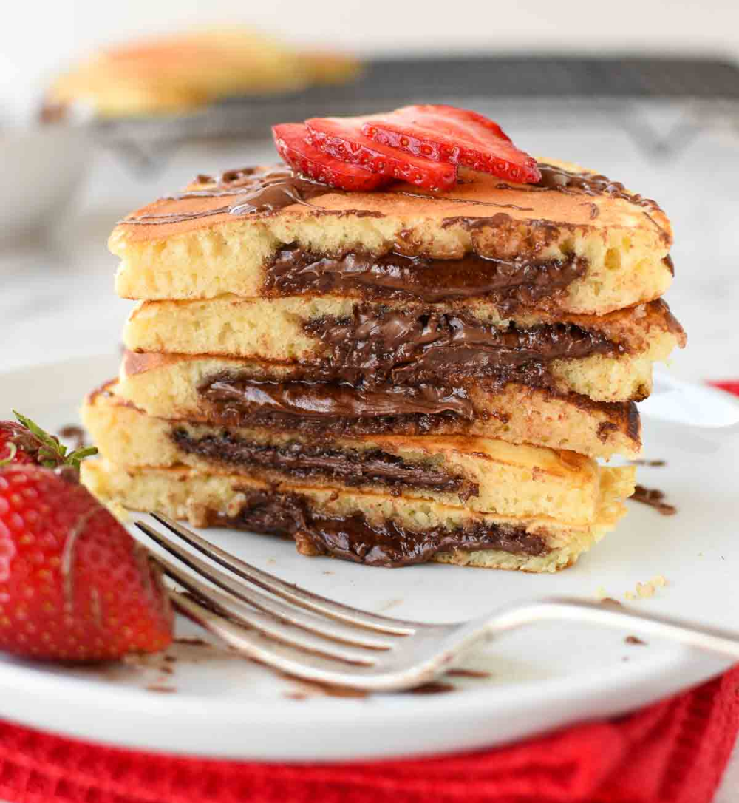

NUTELLA PANCAKE

RESEP:
- 180 gram tepung terigu
- 1 sdt baking powder
- 200 ml susu cair full cream
- sejumput garam (opsional)
- 3 sdm gula pasir (sesuai selera)
- Coklat Nutella
|
CARA MEMBUAT:
- Siapkan wadah kemudian masukkan terigu, gula pasir, garam, baking powder dan susu cair kedalamnya, aduk semua bahan hingga merata dan tidak ada lagi gumpalan
- Siapkan teflon (disarankan teflon anti lengket), nyalakan kompor dengan api kecil-sedang
- Tuangkan adonan sedikit demi sedikit (besar kecilnya adonan tergantung selera)
- Masak pancake hingga bagian atasnya matang dan tidak basah kemudian balik sisi atasnya agar tingkat kematangan setiap sisinya sama
- Jika pancake sudah matang siapkan piring dan susun pancake diatasnya, tambahkan coklat nutella
- Nutella pancake siap disajikan!
|